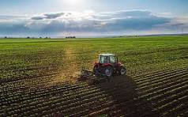
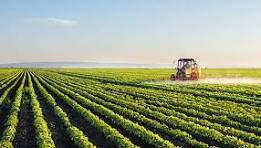
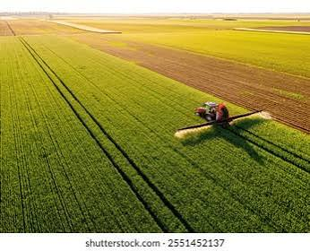

Farming practices include crop rotation, irrigation, fertilization, weed management, pest control etc. These practices help improve crop growth, increase yield, maintain soil health, and ensure efficient and environmentally friendly agricultural production.

Farming techniques are the proper and smart ways used to grow crops efficiently and sustainably. They include proper land preparation, planting, irrigation, fertilization, pest management, and harvesting to improve crop yield and quality.

Methodologies in farming are the systematic approaches used to cultivate crops effectively. They involve planning, implementing, and managing farming activities to improve productivity, sustainability, and crop quality.
Crop Type: Cereal
Farming Season: Aus: March to August, Aman: July to November, Boro: November to May
Farming Methods: Nursery raising, transplanting, or direct seeding in flooded fields.
Crop Type: Fruit
Farming Season: Flowering: January to February, Fruiting: April to July, Harvest: May to July
Farming Methods: Planting grafted saplings in orchards with regular watering and pruning.
Crop Type: Cash
Farming Season: Planting: October to December, Harvest: November to April.
Farming Methods: Planting stem cuttings in rows and providing irrigation, fertilization, and weed control.
Select the right crop, test the soil, and prepare the land. Choose high-quality seeds and ensure proper irrigation is available.
Use sensors, drones, or mobile apps to monitor soil moisture, weather, and crop health. Regularly inspect fields for pests and diseases.
Use precision irrigation, apply fertilizers only where needed, and control pests using Integrated Pest Management (IPM).
Harvest crops at the right time, store them properly, and review farm data to improve future production.